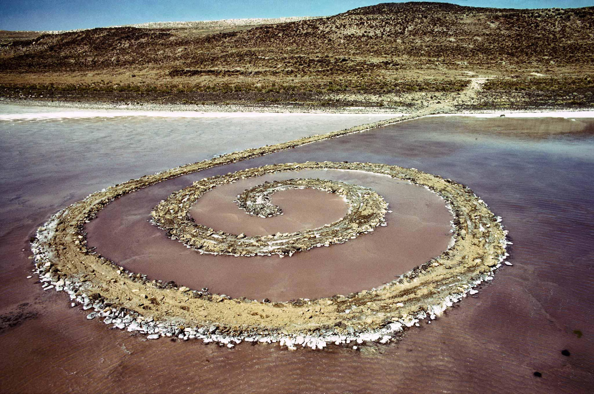
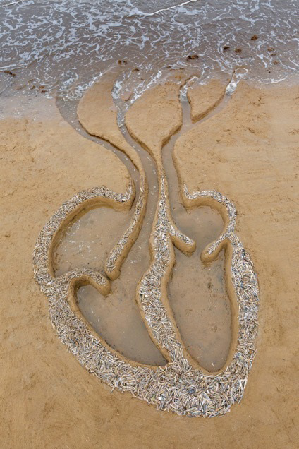
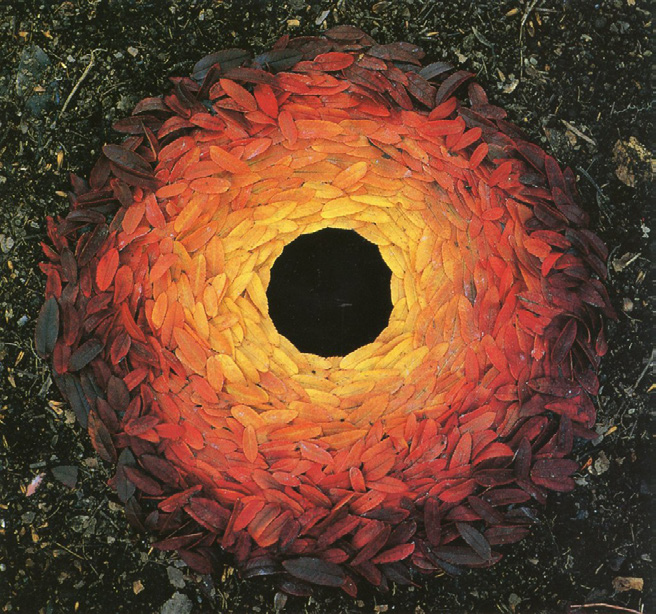
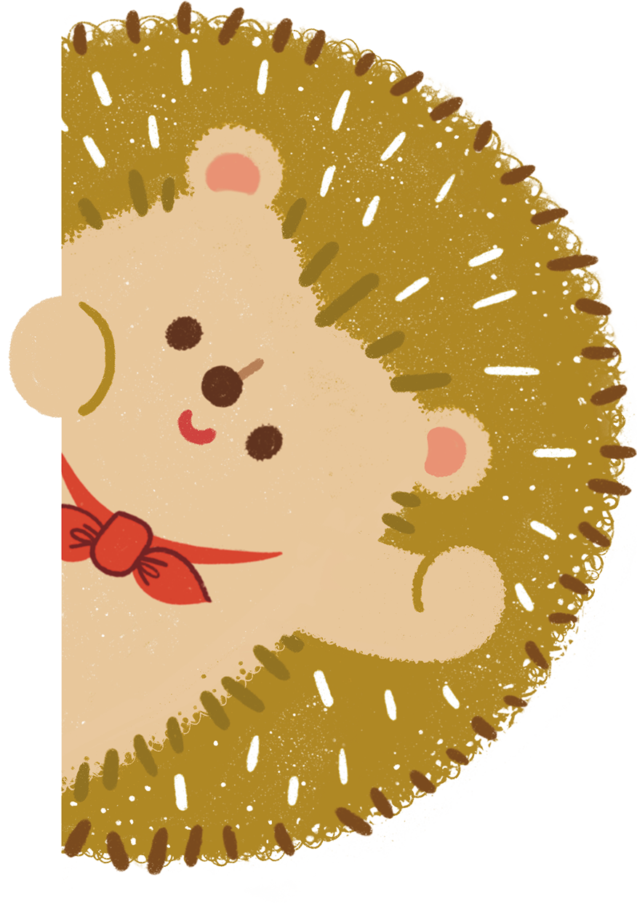

마무리하기 자연물을 이용한 미술 작품을 감상해 봅시다.

스미드슨(Smithson, Robert/미국/1938~1973) 「나선형 방파제」
(바위, 소금, 결정체, 흙, 물/길이: 457.2m, 굵기: 4.6m/1970년 작)
저는 대지 미술가 스미드슨입니다. 옆에 있는 「나선형 방파제」는 1970년에 만든 작품이에요. 나선의 길이는 457.2m, 굵기는 4.6m로 매우 크죠.
정답
마무리하기 자연물을 이용한 미술 작품을 감상해 봅시다.

맥고완(McGowan, Liz/영국/1953~)
「바다 심장」 (모래 등/가변 설치/2016년 작)

골즈워디(Goldsworthy, Andy/영국/1956~)
「구멍 주변의 로웬단풍」(나뭇잎/가변 설치/1987년 작)

‘대지 미술’은 자연물로 자연 속에 작품을 만드는 예술이야. 이렇게 만든 미술 작품은 시간이 지남에 따라 자연과 함께 변화해.
정답